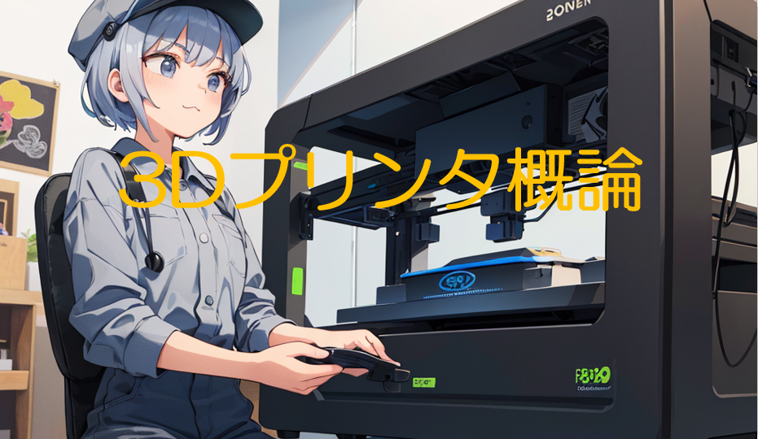

メカトロニクスコース 機材利用申請 - 一つ一つのアイデアを現実に変えるためのステップ
私の役割の中で最も重要な部分の一つは、メカトロニクスコースにおける学生のイノベーションをサポートすることです。基礎研究において、学生たちはしばしば自分たちの創造的なアイデアを具現化する必要に迫られます。このプロセスの初歩的なステップとして、彼らは私が作成したフォームに入力を行い、使用したい機材の申請をします。
しかし、私の役割は単なる申請の処理に留まりません。各学生との個別ディスカッションを通じて、彼らのプロジェクトの目的と必要性を深く理解し、それに基づいて最適な機材の提供を行っています。このやり取りは、学生にとっても私にとっても非常に価値のある経験であり、彼らの学習プロセスに深い洞察を与えます。
今年度は、約50件の機材利用申請がありました。それぞれの申請は、学生が取り組んでいるプロジェクトの多様性と革新性を反映しています。3年生の実験実習から5年生の卒業研究に至るまで、これらの申請は学生たちが直面する技術的な挑戦と、彼らがそれをどのように克服しているかを示しています。
関連科目 3年実験実習、4年基礎研究、5年卒業研究
分掌業務 シラバス編集作業
一般的には知られていないがpdfファイルは、見た目とデータ構造の内容が異なっており、単純なファイルの読み取りだけで、内部情報を取得することは困難である。そのためpdf操作専用ライブラリと特定文章抽出を行うことが必要である。(正規表現を使って、特定の文言を抽出する)


プログラミング
プログラム言語pythonを用いて作成した物品の例を以下に示す。

4月 teams移行による学生情報記載のルール厳重化のための解読・復元ツール 保健室・学生相談室等で利用実績あり。
3DCADと加工品例/
3DCADソフト「Fusion360」を用いて作成した物品の例を以下に示す。


1月 学生から依頼のあった、義援金ボックスの作成。能登半島と文字以外のCADデータとレーザー加工を行った。

11月 次年度実験実習で使用予定のロボットアームの基部を机に固定するための治具板

11月 「中津先生」主催のメントスガイザーコンテストに参加したときの噴出口 (参考予算5000円)
製作した講義資料
3Dプリンター概論抜粋(約90P程度) 該当科目:1年実験実習 3年実験実習 4年基礎研究等(各1コマ相当)


生成AI概論抜粋(約120P程度) 該当科目:4年実験実習(1コマ)